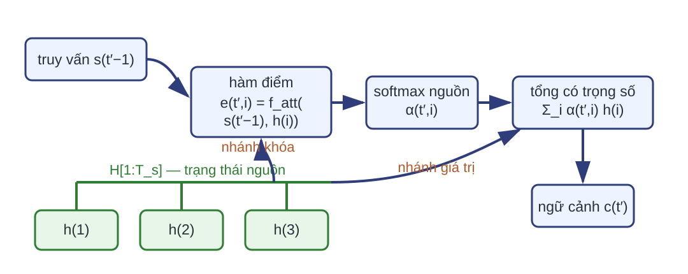
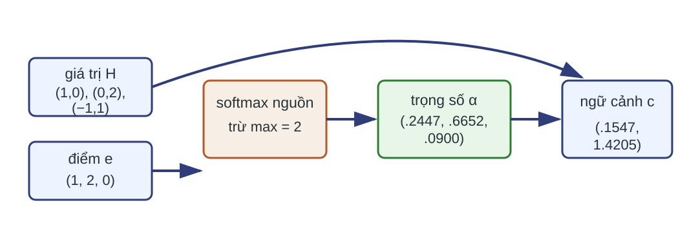
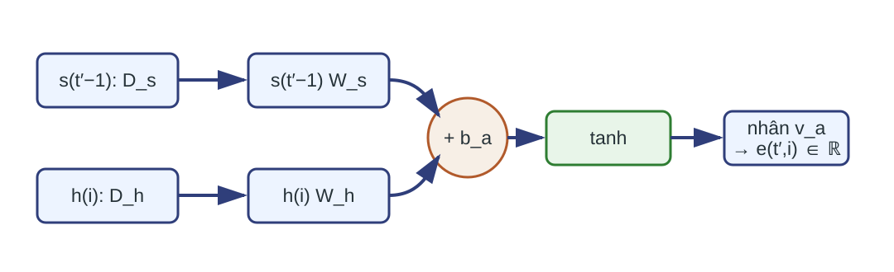
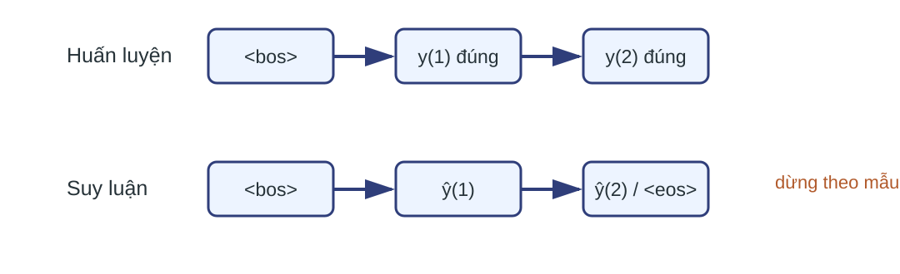
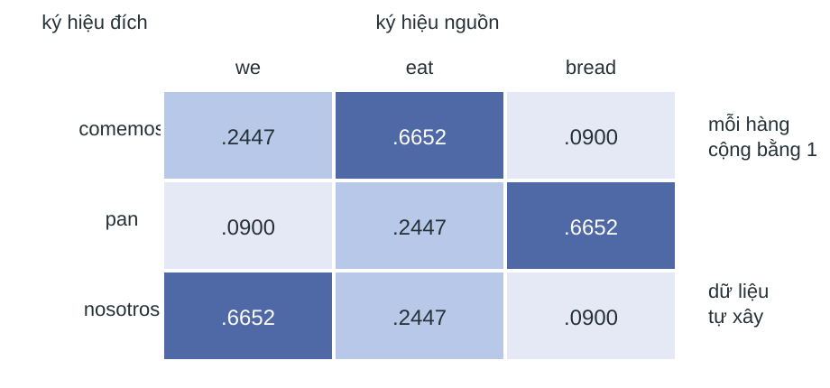
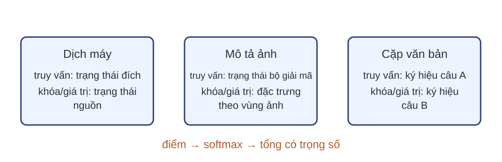

Mỗi bước đích tạo một ngữ cảnh mới Chấm điểm So trạng thái giải mã trước với từng trạng thái nguồn.
Chuẩn hóa Softmax theo các vị trí nguồn hợp lệ.
Tổng hợp Lấy tổng có trọng số của trạng thái nguồn.
$s_{t'-1}\rightarrow e_{t',i}\rightarrow \alpha_{t',i}\rightarrow c_{t'}$
Dấu $t'$ dành cho thời gian đích, còn $i$ dành cho vị trí nguồn. Truy vấn đổi theo $t'$, nên ngữ cảnh cũng đổi.Nguồn: lec15_attention.pdf , PDF 9–13; giáo trình, PDF 259–262.
Chú ý chéo nối hai chuỗi 
Chú ý chéo (cross-attention) dùng truy vấn từ chuỗi đích và khóa, giá trị từ chuỗi nguồn. Một hàng trọng số được tạo cho mỗi bước giải mã.Nguồn: lec15_attention.pdf , PDF 9–13; giáo trình, PDF 258–262.
Truy vấn, khóa và giá trị có ba vai trò Truy vấn $q_{t'}=s_{t'-1}$ mô tả thông tin bộ giải mã cần.
Khóa $k_i=h_i$ tham gia tính độ tương thích.
Giá trị $v_i=h_i$ đóng góp vào ngữ cảnh.
$$\operatorname{Attention}\!\left(q,\{(k_i,v_i)\}\right)=\sum_i\alpha(q,k_i)v_i.$$
Trong Bahdanau, softmax tạo $\alpha_i\ge0$ và $\sum_i\alpha_i=1$ trên các vị trí hợp lệ.
Câu hỏi: Trong chú ý Bahdanau của bài, đại lượng nào đến từ bộ giải mã?
Truy vấn $q_{t'}=s_{t'-1}$.
Định nghĩa tổng quát không buộc mọi cách đặt $\alpha$ là một phân phối xác suất. Trong cơ chế Bahdanau của bài, softmax chuẩn hóa điểm trên các vị trí nguồn hợp lệ. Khóa và giá trị cùng lấy từ trạng thái mã hóa nhưng giữ hai vai trò toán học khác nhau.Nguồn: giáo trình, PDF 258–261; đối chiếu lec15_attention.pdf , PDF 31–33.
Hợp đồng kích thước khóa hai trục thời gian $$H\in\mathbb R^{N\times T_s\times D_h},\quad S^-\in\mathbb R^{N\times D_s},\quad E,A\in\mathbb R^{N\times T_s},\quad C\in\mathbb R^{N\times D_h}.$$
$T_s$: số bước nguồn tối đa.
$1\le L_n\le T_s$: độ dài nguồn thật, gồm EOS.
Đệm ở cuối chuỗi: $M^{src}_{n,i}=\mathbf1[i\le L_n]$.
Công thức mặt nạ giả sử các vị trí đệm nằm sau token nguồn cuối. EOS và điều kiện $L_n\ge1$ bảo đảm mỗi hàng softmax có ít nhất một khóa hợp lệ. Ở một bước đích, $S^-$ là trạng thái giải mã trước; softmax chạy theo trục $T_s$, độc lập cho từng mẫu trong lô.Nguồn: giáo trình, PDF 239–243, 258–262; kích thước theo lô được làm rõ để triển khai.
Vết số bắt đầu từ ba giá trị và ba điểm 
Dữ kiện minh họa: $H=[(1,0),(0,2),(-1,1)]$ và điểm cho sẵn $e=(1,2,0)$; cả ba vị trí nguồn hợp lệ.
Điểm $e$ được xem là đầu ra của mạng tính điểm tại một bước đích.Nguồn: công thức từ lec15_attention.pdf , PDF 11; số minh họa áp dụng công thức nguồn.
Chuẩn hóa điểm theo trục nguồn $$\alpha_i=\frac{\exp(e_i-m)}{\sum_{j=1}^{T_s}\exp(e_j-m)},\qquad m=\max_j e_j.$$
Trừ cực đại theo từng hàng trước khi lấy mũ; softmax không đổi nhưng phép tính ổn định hơn.
Công thức đang xét một mẫu chưa đệm, nên cả ba vị trí đều hợp lệ. Với $e=(1,2,0)$, lấy $m=2$. Khi có đệm, mẫu số chỉ cộng vị trí hợp lệ bằng mặt nạ trước softmax. Trừ cùng $m$ khỏi mọi điểm không đổi tỉ số vì nhân tử $\exp(-m)$ triệt tiêu ở tử và mẫu.Nguồn: giáo trình, PDF 260; ổn định số được làm rõ để triển khai.
Ba điểm tạo một phân phối chú ý $$\exp(e-m)=(\exp(-1),1,\exp(-2)),\qquad \alpha=(.2447,.6652,.0900).$$
$\alpha_i\ge0$ cho mọi $i$.
$\sum_i\alpha_i\approx1$ sau làm tròn.
Vị trí hai nhận trọng số lớn nhất vì có điểm cao nhất. Softmax vẫn phân bổ khối lượng cho hai vị trí còn lại.Nguồn: công thức từ lec15_attention.pdf , PDF 11; số minh họa áp dụng công thức nguồn.
Ngữ cảnh là tổng có trọng số của giá trị $$c=\sum_{i=1}^{3}\alpha_i h_i\approx.2447(1,0)+.6652(0,2)+.0900(-1,1).$$
$$c=(.1547,1.4205).$$
Các hệ số trên mặt trang đã được làm tròn; giá trị cuối được tính từ trọng số đầy đủ rồi mới làm tròn bốn chữ số. Điểm số quyết định trọng số, còn các giá trị $h_i$ quyết định hướng và nội dung của ngữ cảnh.Nguồn: lec15_attention.pdf , PDF 11; giáo trình, PDF 260–261; số minh họa áp dụng công thức nguồn.
Ngữ cảnh nằm trong bao lồi của các giá trị $\alpha_i\ge0$
Không đảo dấu giá trị bằng trọng số âm.
$\sum_i\alpha_i=1$
Ngữ cảnh là một tổ hợp lồi.
Trọng số lớn làm một giá trị đóng góp nhiều hơn, nhưng ngữ cảnh vẫn có thể trộn nhiều vị trí.
Hai cực trực giác là chọn cứng, khi một trọng số bằng 1, và trung bình đều, khi mọi trọng số bằng $1/T_s$. Chú ý mềm có thể nội suy giữa hai cực này.Nguồn: giáo trình, PDF 258–260.
Kiểm tra vết tổng hợp Câu hỏi: Nếu $H$ có kích thước $N\times T_s\times D_h$ và $A$ có kích thước $N\times T_s$, $C$ có kích thước nào? Trục nào bị rút gọn?
$C\in\mathbb R^{N\times D_h}$; tổng có trọng số rút gọn trục nguồn $T_s$.
Không tổng theo lô hoặc chiều ẩn. Mỗi mẫu nhận một vectơ ngữ cảnh riêng tại bước đích đang xét. Điểm trong vết số là đầu ra của hàm điểm tại một bước đích.Nguồn: giáo trình, PDF 258–261.
Bahdanau học hàm điểm cộng 
Mạng điểm học cách kết hợp trạng thái giải mã trước với từng trạng thái mã hóa.
Tên “chú ý cộng” đến từ phép cộng hai phép chiếu trước tanh. Điểm cuối cùng là một số vô hướng cho mỗi cặp truy vấn–khóa.Nguồn: giáo trình, PDF 260–261, (9.4); Bahdanau, Cho và Bengio, 2015.
Hàm điểm giữ rõ mọi kích thước $$e_{n,t',i}=\tanh\!\left(s_{n,t'-1}W_s+h_{n,i}W_h+b_a\right)v_a,$$
Tham số Kích thước $W_s$ $D_s\times D_a$ $W_h$ $D_h\times D_a$ $b_a$ $1\times D_a$ $v_a$ $D_a\times1$
Số tham số của mạng điểm cộng: $D_a(D_s+D_h+2)$.
Bài dùng vectơ hàng để nối với quy ước tensor theo lô. Công thức nguồn dùng vectơ cột nhưng biểu diễn cùng một phép tính sau chuyển vị tham số.Nguồn: giáo trình, PDF 260–261, (9.4).
Phát tự động chỉ mở rộng theo lô và nguồn $$R_q=S^-W_s\in\mathbb R^{N\times D_a},\qquad R_h=HW_h\in\mathbb R^{N\times T_s\times D_a},$$ $$U=\tanh(R_q[:,\mathrm{newaxis},:]+R_h+b_a),\qquad E=(Uv_a)[:,:,0]\in\mathbb R^{N\times T_s}.$$
$R_q$ phát theo trục nguồn; phép co với $v_a$ loại chiều cuối độ dài $D_a$ rồi bỏ trục đơn vị.
Câu hỏi: Vì sao $E$ không còn chiều $D_a$?
Phép co với $v_a$ rút gọn chiều $D_a$; sau đó bỏ trục cuối có độ dài 1.
$R_q[:,\mathrm{newaxis},:]$ có kích thước $N\times1\times D_a$ và phát với $R_h$ thành $N\times T_s\times D_a$; $b_a$ phát theo lô và nguồn. Nhân $v_a\in\mathbb R^{D_a\times1}$ co chiều $D_a$, cho $N\times T_s\times1$, rồi bỏ trục cuối. $R_q,R_h$ là biểu diễn đã chiếu, không đổi nghĩa truy vấn $q=s^-$ và khóa/giá trị thô $h_i$.Nguồn: giáo trình, PDF 260–261; dạng tensor theo lô được suy ra từ (9.4).
Mặt nạ nguồn phải đi vào trước softmax $$\widetilde E_{n,i}=\begin{cases}E_{n,i},&M^{src}_{n,i}=1,\\-\infty,&M^{src}_{n,i}=0,\end{cases}\qquad A=\operatorname{softmax}_{T_s}(\widetilde E).$$
Mỗi hàng có ít nhất một vị trí hợp lệ. Dùng $-\infty$ khi phép toán hỗ trợ; giá trị thay thế hữu hạn chỉ cho trọng số đệm xấp xỉ 0.
EOS bảo đảm mỗi chuỗi có ít nhất một vị trí hợp lệ. Hàng toàn mặt nạ phải được chặn hoặc xử lý riêng: softmax của toàn $-\infty$ sinh NaN, còn cùng một giá trị thay thế hữu hạn có thể sinh phân phối đều. Đặt mặt nạ sau softmax rồi nhân 0 cũng làm tổng trọng số còn lại nhỏ hơn 1 nếu không chuẩn hóa lại. Vết số có đệm cho thấy mặt nạ thay đổi chính mẫu số.Nguồn: giáo trình, PDF 239–243, 260–262; quy ước mặt nạ được làm rõ để triển khai.
Mặt nạ đổi mẫu số của vết số $$e=(1,2,0),\quad M^{src}=(1,1,0)\Rightarrow \alpha=(.2689,.7311,0),$$ $$c\approx.2689(1,0)+.7311(0,2),\qquad c=(.2689,1.4621).$$
Câu hỏi: Vì sao không được giữ trọng số $.0900$ cho vị trí thứ ba?
Đó là vị trí đệm; nó phải bị loại khỏi mẫu số softmax và khỏi tổng giá trị.
Hai hệ số hiển thị đã được làm tròn; giá trị $c$ cuối được tính từ trọng số đầy đủ rồi mới làm tròn. Hai trọng số hợp lệ được chuẩn hóa lại để cộng bằng 1.Nguồn: công thức từ giáo trình, PDF 260–262; số minh họa áp dụng công thức nguồn.
Ngữ cảnh đi vào cập nhật trạng thái giải mã $$s_{t'}=g\!\left(s_{t'-1},[E_y(y_{t'-1});c_{t'}]\right).$$
$E_y(y_{t'-1})\in\mathbb R^{N\times D_e}$
$C\in\mathbb R^{N\times D_h}$
Đầu vào ghép của $g$ có chiều $D_e+D_h$. Với LSTM, truy vấn lấy trạng thái ẩn; trạng thái ô được truyền riêng.
$E_y\in\mathbb R^{V_{tgt}\times D_e}$ ánh xạ token đích thành vectơ nhúng. Ký hiệu $E_y$ không xung đột với $E$ là ma trận điểm. Ngữ cảnh được tính từ $s_{t'-1}$ trước khi ô $g$ cập nhật trạng thái mới.Nguồn: giáo trình, PDF 261–262, (9.7); lec15_attention.pdf , PDF 11–13.
Điểm đầu ra kết hợp trạng thái và ngữ cảnh $$O_{t'}=[s_{t'};c_{t'}]W_o+b_o\in\mathbb R^{N\times V_{tgt}},\qquad P_{t'}=\operatorname{softmax}_{V_{tgt}}(O_{t'}).$$
$W_o\in\mathbb R^{(D_s+D_h)\times V_{tgt}}$, $b_o\in\mathbb R^{V_{tgt}}$; toàn chuỗi $O\in\mathbb R^{N\times T'\times V_{tgt}}$.
Huấn luyện dùng hàm mất mát chéo entropy (cross-entropy) hợp nhất từ logit hoặc log-softmax ổn định; không tính softmax rồi lấy log thủ công.
$W_o$ chiếu vectơ ghép trạng thái–ngữ cảnh thành logit từ vựng; $b_o$ là độ lệch phát theo trục lô. $V_{tgt}=|\mathcal V_{tgt}|$ là kích thước từ vựng đích. Softmax đầu ra chạy trên trục từ vựng cuối, khác softmax chú ý theo trục nguồn $T_s$; công thức dùng đúng logit $O_{t'}$ của cùng bước đích.Nguồn: giáo trình, PDF 261–262, (9.8); ổn định số được làm rõ để triển khai.
Học theo đáp án lệch đầu vào một bước Đầu vào giải mã $\langle\mathrm{BOS}\rangle,y_1,\ldots,y_{T'-1}$
Nhãn $y_1,\ldots,y_{T'}$ với $y_{T'}=\langle\mathrm{EOS}\rangle$
BOS là ký hiệu bắt đầu chuỗi; EOS là ký hiệu kết thúc chuỗi. Học theo đáp án (teacher forcing) dùng ký hiệu đích đúng của bước trước làm đầu vào cho bước hiện tại.
Mỗi bước vẫn tính chú ý từ trạng thái giải mã trước. Ký hiệu đúng chỉ thay nguồn đầu vào giải mã trong huấn luyện.Nguồn: giáo trình, PDF 239–243; cơ chế chú ý, PDF 261–262.
Suy luận dùng dự đoán của chính mô hình 
Mỗi mẫu dừng khi sinh $\langle\mathrm{EOS}\rangle$ hoặc đạt độ dài tối đa; mặt nạ hoạt động giữ nguyên trạng thái của mẫu đã kết thúc.
Khi suy luận theo lô, dùng mặt nạ hoạt động để không cập nhật trạng thái và không ghi ký hiệu mới cho mẫu đã kết thúc, hoặc loại mẫu khỏi lô đang hoạt động. Sai dự đoán có thể thay đổi trạng thái, truy vấn và hàng chú ý ở mọi bước sau. Hai chế độ dùng cùng tham số nhưng khác đường dữ liệu đầu vào.Nguồn: giáo trình, PDF 242–245; lec15_attention.pdf , PDF 10–13.
Sai số đầu vào có thể đổi các bước sau Câu hỏi: Một token dự đoán sai có thể làm những đại lượng nào ở bước sau thay đổi?
Vector nhúng đầu vào, trạng thái, truy vấn, hàng trọng số chú ý và dự đoán tiếp theo đều có thể đổi.
Câu hỏi kiểm tra hệ quả của đường dữ liệu tự hồi quy thay vì lặp lại quy tắc dừng. Mẫu đã sinh EOS vẫn được mặt nạ hoạt động giữ trạng thái hoặc loại khỏi lô đang hoạt động.Nguồn: giáo trình, PDF 242–245.
Mỗi hàng biểu diễn một bước đích 
$\mathcal A\in\mathbb R^{T'\times T_s}$ cho một mẫu; $\mathcal A_{t',:}=\alpha_{t',:}$ được chuẩn hóa riêng trên nguồn.
Các hàng điểm cho thấy cực đại có thể đổi thứ tự giữa hai chuỗi. Chúng không phải căn chỉnh ngôn ngữ học hay kết quả huấn luyện. Ô đậm chỉ vị trí có trọng số lớn hơn, không biến căn chỉnh mềm thành ghép cặp cứng.Nguồn: lec15_attention.pdf , PDF 12–14; giáo trình, PDF 262–263; số minh họa áp dụng cơ chế nguồn.
Ba hàng điểm cho sẵn tạo ba phân phối Bước đích Điểm cho sẵn Vị trí nguồn có trọng số lớn nhất $1$ $(1,2,0)$ $2$ $2$ $(0,1,2)$ $3$ $3$ $(2,1,0)$ $1$
Mỗi hàng được softmax riêng trên trục nguồn.
Ba hàng điểm là dữ kiện minh họa; chúng không được suy ra từ một bộ tham số Bahdanau cụ thể. Ma trận cho thấy phép tổng hợp thay đổi theo bước nhưng không chứng minh nguyên nhân của dự đoán.Nguồn: cơ chế từ lec15_attention.pdf , PDF 12–14; số minh họa áp dụng cơ chế nguồn.
Trọng số chú ý không phải bằng chứng nhân quả Có thể đọc Phân phối mà phép tổng hợp đã dùng tại một bước và một lần chạy.
Không thể suy ra trực tiếp Vị trí nào gây ra quyết định hoặc mô hình sẽ phản ứng thế nào khi can thiệp.
Câu hỏi: Ô lớn nhất trong bản đồ chú ý có đủ để kết luận ký hiệu nguồn đó gây ra dự đoán không?
Không. Cần thí nghiệm can thiệp hoặc phân tích bổ sung; trọng số chỉ mô tả phép tổng hợp.
Trọng số hỗ trợ quan sát căn chỉnh mềm nhưng chưa phải diễn giải nhân quả. Các đường qua trạng thái giải mã và tham số đầu ra cũng ảnh hưởng dự đoán.Nguồn: giáo trình, PDF 262–263.
Một bước giải mã có sáu phép tính Áp dụng $W_s$ cho truy vấn và $W_h$ cho trạng thái nguồn. Tạo điểm Bahdanau cho từng cặp đích–nguồn. Áp dụng $M^{src}$ rồi softmax theo $T_s$. Tính tổng giá trị có trọng số để tạo $c_{t'}$. Cập nhật $s_{t'}$ từ $y_{t'-1}$ và $c_{t'}$. Tạo logit, xác suất và phần mất mát hợp lệ. Các trạng thái mã hóa được chiếu một lần rồi dùng lại. Trong huấn luyện, các phép tính vẫn nằm trên đồ thị để đạo hàm đi qua điểm số và bộ mã hóa.Nguồn: lec15_attention.pdf , PDF 11–13; giáo trình, PDF 260–262.
Mất mát cập nhật cả điểm và giá trị $$\mathcal L=\frac{\sum_{n,t'}M^{tgt}_{n,t'}\operatorname{CE}(O_{n,t'},y_{n,t'})}{\sum_{n,t'}M^{tgt}_{n,t'}},\qquad \sum M^{tgt}>0.$$
Đường giá trị: $\mathcal L\rightarrow c\rightarrow H$.
Đường điểm: $\mathcal L\rightarrow\alpha\rightarrow E\rightarrow b_a,v_a$.
Hai phép chiếu: $E\rightarrow W_h,H$ và $E\rightarrow W_s,s_{t'-1}$.
Đạo hàm tới $H$ gồm đường trực tiếp qua giá trị và đường qua phép chiếu khóa. Đạo hàm qua $s_{t'-1}$ tiếp tục về các bước đích trước bằng lan truyền ngược theo thời gian; đạo hàm tới $H$ tiếp tục qua bộ mã hóa. $b_a$ và $v_a$ nhận đóng góp từ mọi cặp đích–nguồn.Nguồn: giáo trình, PDF 239–243, 260–262; huấn luyện khả vi được suy ra từ đồ thị.
Truy xuất động trả giá theo số cặp $$\Theta(NT_sD_hD_a+NT'D_sD_a+NT'T_s(D_a+D_h)).$$
Lưu $E,A$: $\Theta(NT'T_s)$. Khi lan truyền ngược giữ $U$, bộ nhớ có thể đạt $\Theta(NT'T_sD_a)$ nếu không tái tính.
Chi phí theo cặp đổi lấy khả năng truy xuất động các vị trí nguồn ở từng bước đích.
Câu hỏi: Nếu chỉ tăng gấp đôi $T'$, hạng theo mọi cặp đích–nguồn đổi thế nào?
Hạng $NT'T_s(D_a+D_h)$ tăng gấp đôi khi các kích thước khác giữ nguyên.
Biểu thức chỉ tính khối chú ý: chiếu $H$ một lần, chiếu truy vấn ở mỗi bước đích, rồi tính điểm và tổng giá trị cho mọi cặp đích–nguồn. Phép chiếu logit có chi phí riêng $\Theta(NT'(D_s+D_h)V_{tgt})$.Nguồn: kích thước suy ra từ lec15_attention.pdf , PDF 11–14; giáo trình, PDF 260–262.
Đối chiếu hai biến thể cơ sở Thiết kế Thông tin nguồn cho bước $t'$ Đánh đổi Ngữ cảnh cố định của bài $c=h_{L_n}^{enc}$ Ít phép truy xuất; mọi bước dùng cùng bản tóm tắt Chú ý Bahdanau $c_{t'}=\sum_i\alpha_{t',i}h_i$ Truy xuất động; trả chi phí theo cặp
Bảng dùng biến thể cơ sở với $c=h_{L_n}^{enc}$. Các bộ mã hóa–giải mã ngữ cảnh cố định khác có thể đưa ngữ cảnh vào theo cách khác.Nguồn: lec15_attention.pdf , PDF 7–14; giáo trình, PDF 239–241, 259–263.
Kiểm tra toàn bộ vết số Câu hỏi: Với $e=(1,2,0)$, $H=[(1,0),(0,2),(-1,1)]$, hãy nêu trục softmax, trọng số, kích thước và giá trị ngữ cảnh.
Softmax theo ba vị trí nguồn; $\alpha=(.2447,.6652,.0900)$; $c\in\mathbb R^2$ và $c=(.1547,1.4205)$.
Chú ý có thể truy xuất các vùng ảnh 
Mạng tích chập tạo lưới đặc trưng; trạng thái giải mã chấm điểm từng vùng và tạo một tổng đặc trưng riêng cho mỗi từ.
Chỉ số nguồn chuyển từ vị trí ký hiệu sang vị trí không gian. Công thức điểm, chuẩn hóa và tổng giá trị giữ nguyên.Nguồn: lec15_attention.pdf , PDF 19–24.
Tập khóa–giá trị thay đổi theo miền $$\operatorname{Attention}(q,\{(k_i,v_i)\})=\sum_i\alpha(q,k_i)v_i.$$
Dịch máy dùng các trạng thái nguồn.
Mô tả ảnh dùng các vùng đặc trưng.
Tra cứu bản ghi dùng truy vấn để khớp khóa và trả về giá trị.
Phép tổng hợp không tự sử dụng thứ tự của các cặp. Cấu trúc thứ tự hoặc không gian phải nằm trong biểu diễn đầu vào hoặc bộ mã hóa.Nguồn: lec15_attention.pdf , PDF 19, 31–33; giáo trình, PDF 258–260.
Cặp văn bản dùng căn chỉnh mềm hai chiều Tiền đề → giả thuyết Mỗi ký hiệu tiền đề tổng hợp các ký hiệu giả thuyết.
Giả thuyết → tiền đề Mỗi ký hiệu giả thuyết tổng hợp các ký hiệu tiền đề.
Mô hình chú ý có thể phân rã tiếp tục bằng so sánh từng cặp mềm rồi tổng hợp để phân loại.
Ứng dụng này cho thấy chú ý không bị giới hạn ở sinh chuỗi. Hai chiều căn chỉnh ở đây là hai phép chuẩn hóa trên hai trục khác nhau.Nguồn: giáo trình, PDF 323–327, mục 11.5.
Kiểm tra ánh xạ ba vai trò Câu hỏi: Trong mô tả ảnh có chú ý, hãy xác định truy vấn, khóa, giá trị và trục softmax ở một bước sinh từ.
Truy vấn là trạng thái giải mã trước; khóa và giá trị là đặc trưng theo vùng ảnh; softmax chạy trên các vùng hợp lệ.
Một hiện thực có thể chiếu khóa và giá trị khác nhau, nhưng nguồn của chúng vẫn là lưới đặc trưng ảnh trong mô hình này. Ba vai trò không đổi khi miền dữ liệu thay đổi.Nguồn: lec15_attention.pdf , PDF 20–24.
Từ nút thắt đến truy vấn, khóa và giá trị Chú ý thay một vectơ cố định bằng truy xuất theo từng bước: truy vấn chấm điểm khóa, rồi trọng số tổng hợp các giá trị.
Bài 11 tiếp tục bằng cách tạo truy vấn, khóa và giá trị từ cùng một chuỗi.
Cơ chế Bahdanau nối ba bước thành một đường tính: chọn theo khóa, tổng hợp giá trị và cập nhật bộ giải mã. Tự chú ý giữ ba vai trò này nhưng thay nguồn tạo chúng.Nguồn: lec15_attention.pdf , PDF 3–14, 30–41; giáo trình, PDF 258–263.